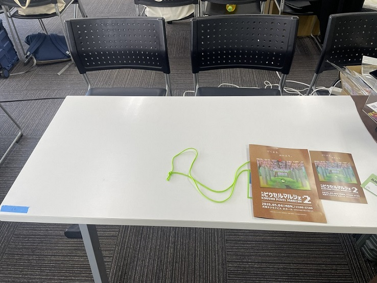
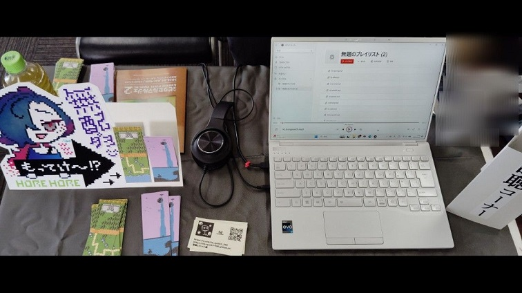
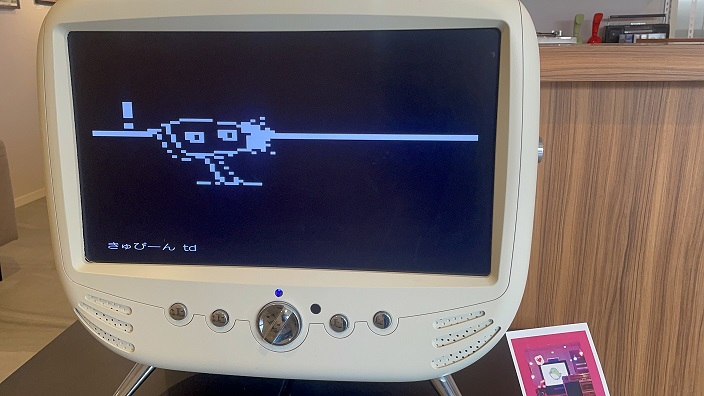
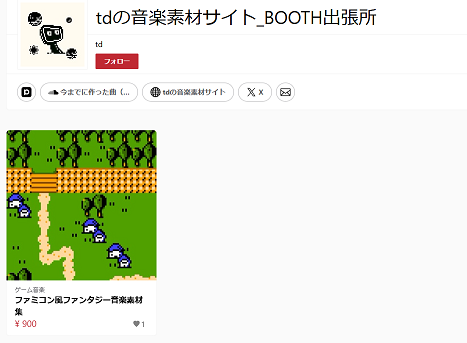

九州ピクセルマルシェ2出展日記 - 04（感想、反省）
2026年5月17日
音楽、ドット絵
九州ピクセルマルシェ2感想と反省
かぶとやもどきさん(@kabutoyamodoki)主催のドット絵・ピクセルアートイベント「九州ピクセルマルシェ2」が2026年5月4日（月祝）に福岡県の天神で開催されました。


向かって左のパネルは売り子をやってくださったAyasa（@Ais_lin_04）さんに依るものです。試聴用PCとか長机の布も用意していただいたり。しおりの裏面デザインや、印刷、裁断でもご協力いただき大感謝。

感想と反省
人生初出展の感想
まずご来場の方々についてですが、ゴールデンウィークということもありお子様連れのご家族の姿もけっこう見受けられました。もちろん、一人で来られている方も。開場前から受付に並んでくださる方もおり、最初の一時間が一番人が多かったと思います。
今回、ぴくまるの前日に九州コミティアにも行ってみた（人生初コミティア！）時にも思ったのですが、けっこう出展者とお話しされる方いらっしゃいますね！ どれくらい時間かけて作ったんですかとか、この絵は元になった写真があるんですか？ とか。 互いに創作者であるという場合もありますし、そうでなかったとしても物を作っている人の考えに興味がある人も多く、コミュニケーションの場でもあるのだなと感じました。
tdも「この栞Twitterで見たことあります」と言ってもらえてありがたい気持ちになりました。
個人的な反省
- 「モノ」があると足を止めやすいし、何のサークルなのか分かりやすい 当たり前なのですがポストカードや本などの頒布物、アニメーションを写したタブレットがあると皆さんそれを注視したり、会話のはじまりになったりしますね。僕は音楽系にもかかわらずCD置いてなかったので、同じく音楽系のはるはびさんと比べてもスペース上の物量が違いましたね。CDあると音楽のスペースって分かりやすかったかもな～、と思います。
- 普通にリスニングできるような楽曲もあると良かった 音楽素材を作っていて～、と説明しながら気が付いたのですが別に皆が皆創作をしていてその素材としての音楽を求めているわけではないのですよね。今回の素材集は架空のゲームのサントラというイメージなのでそのように聴いていただいても良いのですが、やはり普通にリスニングに向く楽曲集も用意しても良かったですね。
- 用途に特化した素材集でも良かった 素材集なら素材集で、戦闘っぽい曲だけ10曲、とか街っぽい曲だけ10曲、とかもアリだと思います。
曲について
tdの音楽素材サイト_BOOTH出張所で販売を開始しました。普段は自分のサイトで楽曲をフリー配布していますが、今回は架空のゲームのサントラというような趣で、オープニングからエンディングまで16曲。

全曲試聴ダイジェストはこちら
今回の販売内容はwav、mp3、oggの3種類。oggはループタグを付しているので、対応する制作ソフト（SRPG Studioなど）では指定の位置でループするようになっています。
さいごに
かぶとやさんはじめ運営体制がとても丁寧で、まめな連絡・周知と質問への迅速な回答など、初めて出展する身として安心して参加できました。
今後は分かりませんが何かイベントに出るとしたら上記の反省を活かすようなことがあったりなかったりするかも。
ぴくまる運営、出展者、参加者、天神チクモクビル、ありがとうございました！